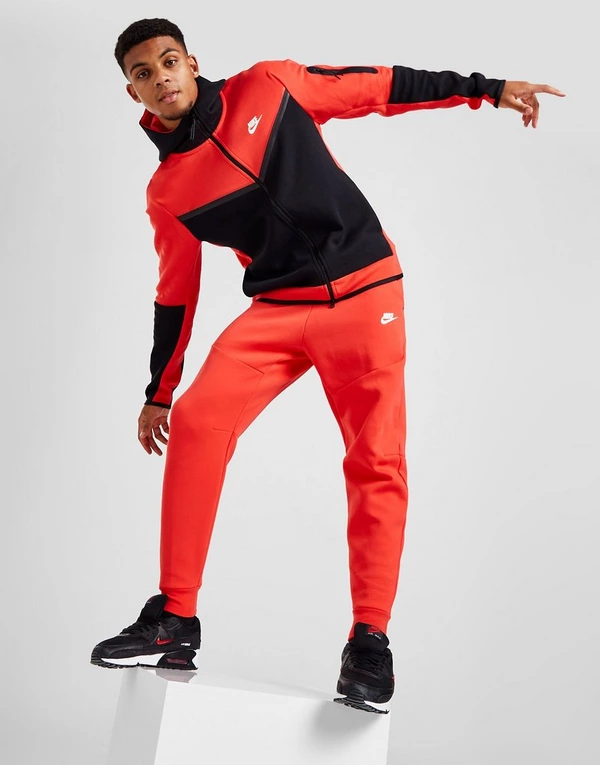

Esta va a ser la segunda pagina de estilos de ropa
Tipos de estilos
Tipo casual suele ser comodo tipo chandals y deportivo
Arreglado suele ser para eventos importantes suele ser de traje o camisa
Informal lo solemos usar para estar por casa o durmiendo y suele ser pijama
Vestir en chándal, la tendencia más rompedora del 2021El chándal se ha convertido en una de las piezas más buscadas de esta temporada. No es ningún secreto que esta prenda ha pasado de ser un simple básico en el armario a convertirse en el look estrella de todas las firmas de moda.
